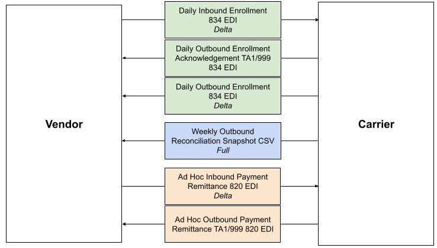

EDI Implementation Guide
ICHRA Connect’s 834 and 820 EDI implementation follows CMS’ FFM standards and companion guide to accompany the X12 834 EDI standard. This includes bi-directional data transfers for net new enrollments as well as other enrollment transaction types, including terminations, cancellations, reinstatements and updates. We prefer to use the CMS standard for 820 EDIs to ensure consistency and reliability. With well-established existing on-exchange infrastructure and processes, Oscar and other carriers can streamline operations, simplify and expedite new integrations, and minimize discrepancies.
Integration Summary
The integration between carrier and an administrator includes three EDI pipelines and one CSV reconciliation file. All file directions are in relation to carrier:
- Carrier Outbound enrollment: 834 EDI with TA1/999
- Carrier Inbound enrollment: 834 EDI with TA1/999
- Carrier Inbound payment: Direct ACH wire transfer with 820 EDI remittance and TA1/999
- Outbound Reconciliation: Billing & Eligibility reconciliation

Enrollment Spec
In order to accommodate ICHRA-specific enrollment needs, we have augmented the CMS 834 EDI implementation in the following ways.
ICHRA Group / Employer Information
As a modification to the FFM standard, administrators should include a 2100D employer loop for ICHRA attribution.
ICHRA Platform Disenrollments (“Soft terms”)
If an employer decides to switch ICHRA administrators or an employee loses their ICHRA benefits (e.g. through loss of a job), they still may retain their carrier’s ACA IFP coverage as a non-ICHRA member and pay for their coverage out of pocket.
To let carrier know when a member is no longer enrolled through the administrator but has not terminated their coverage, the administrator will send an update type enrollment transaction with additional maintenance reason code (AMRC) LEAVE_PLATFORM on an inbound enrollment transaction in the AMRC field of the 2750 Loop.
Payment Spec
We follow the FFM CMS standard for payment remittance transactions. Administrators will send ACH wire transfers directly to carrier’s bank accounts based on the state in which members are enrolled. Administrators will send 820 EDI files with member payment records, specifying which individual owes which premium and/or binder payment amounts, in order for carrier to allocate collections to the appropriate charges.

Reconciliation
We use a weekly reconciliation file to ensure eligibility and billing data is aligned between carrier and the administrator in order to avoid disruptions to member coverage or experiences; for example, a mid-month increase to members’ premiums that could result in declined transactions at time of auto-pay.
The reconciliation file is a full change file that contains a snapshot of all plan year YTD membership, including cancelled and termed members, plus a 3 month prior-year lookback.
Each enrolled member will have one record per month enrolled with the corresponding monthly premium amount for that month.
File Details
Inbound Enrollment 834 EDI
- File type: 834 EDI
- File spec: CMS X12 834 Companion Guide v7.2
- Cadence: Daily batch
- 834 naming convention: FROM_ADMIN.I834.DYYYYMMDD.Thhmmss.P.edi
- TA1/999 naming convention:
- TA1: TO_ADMIN.TA1.DYYYYMMDD.Thhmmss.P.edi
- 999: TO_ADMIN.999.DYYYYMMDD.Thhmmss.P.edi
- Sample file: here
Outbound Enrollment 834 EDI
- File type: 834 EDI
- File spec: CMS X12 834 Companion Guide v7.2
- Cadence: Daily batch
- 834 naming convention: TO_ADMIN.I834.DYYYYMMDD.Thhmmss.P.edi
- TA1/999 naming convention:
- TA1: FROM_ADMIN.TA1.DYYYYMMDD.Thhmmss.P.edi
- 999: FROM_ADMIN.999.DYYYYMMDD.Thhmmss.P.edi
- Sample file: here
Inbound Payment 820 EDI
- File type: 820 EDI
- File spec: FT HIX 820 Companion Guide v4
- Cadence: Batched monthly with ad hoc files as needed
- Payment memo: Include administrator name in the memo description
- 820 Naming convention: EDI.I820.DYYYYMMDD.Thhmmss.P.edi
- TA1/999 Naming convention:
- Sample file: here
Outbound Reconciliation CSV
- File type: CSV
- File spec: Outbound Reconciliation Spec
- Cadence: Weekly
- Full or Delta: Full snapshot of plan year, with 3 month look back to previous year
- Naming Convention: FROM_CARRIER_SNAPSHOT.OUT.YYYYMMDDThhmmss.P.csv
- Sample file: here